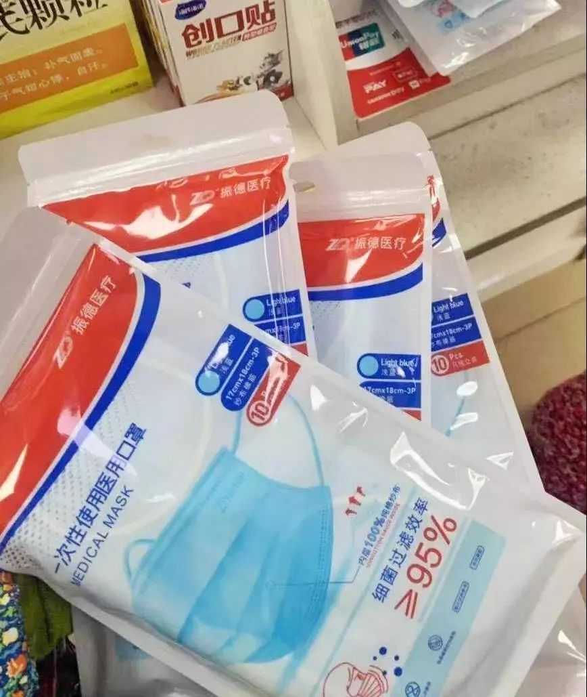
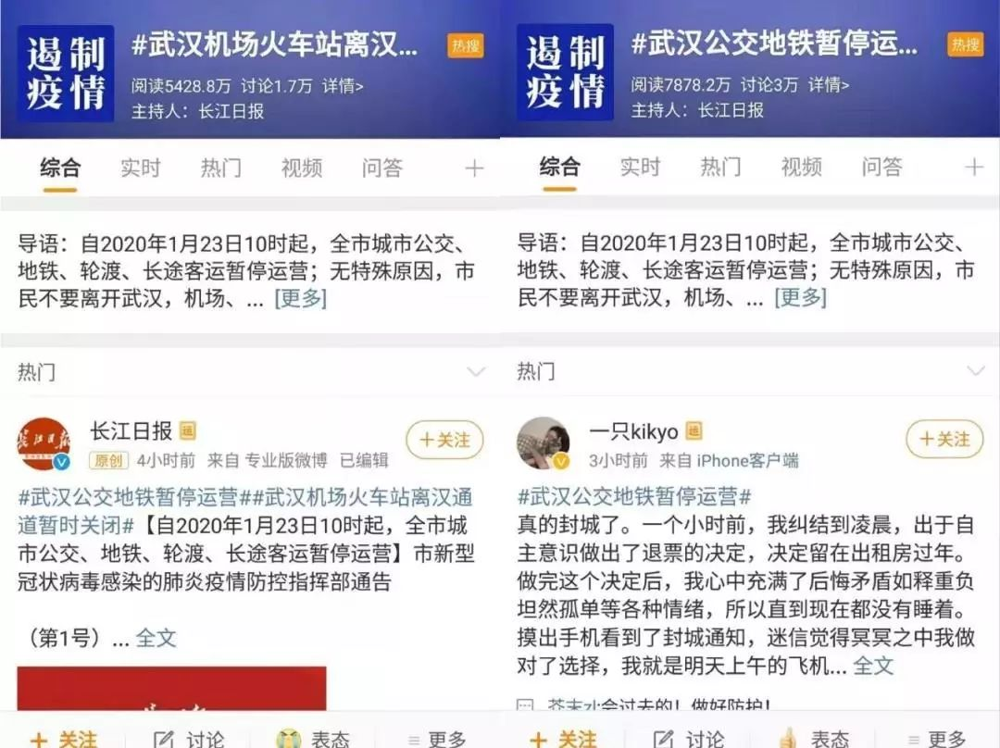
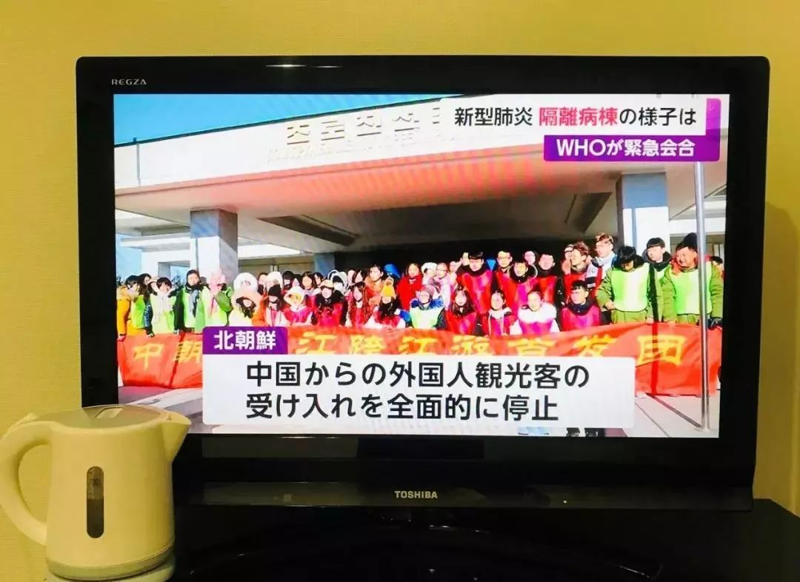
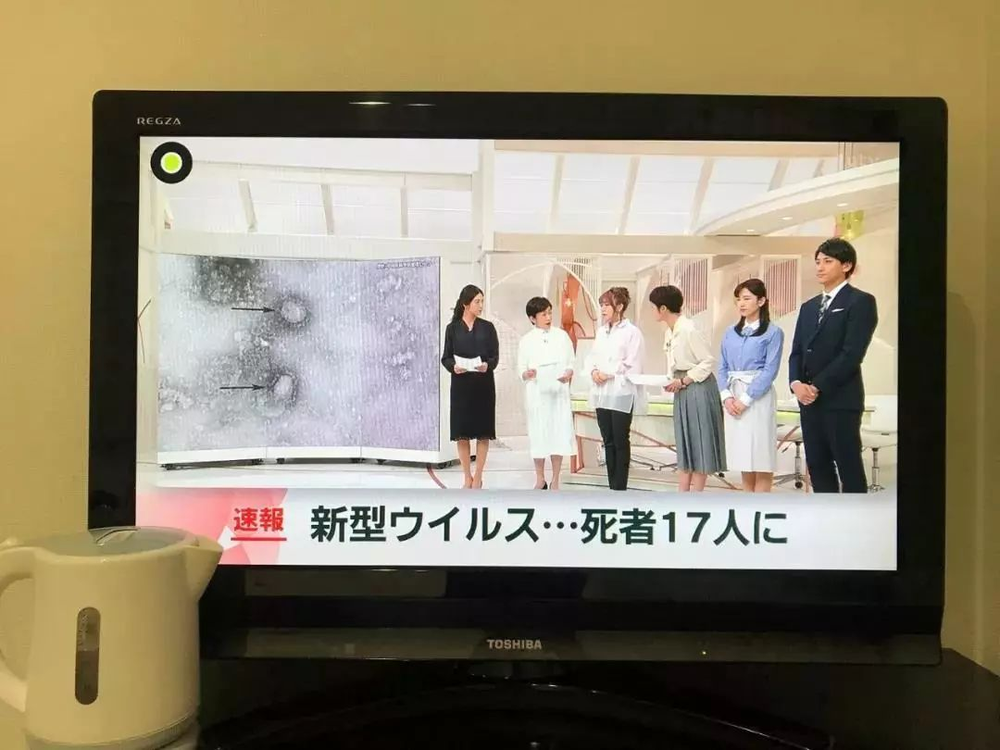
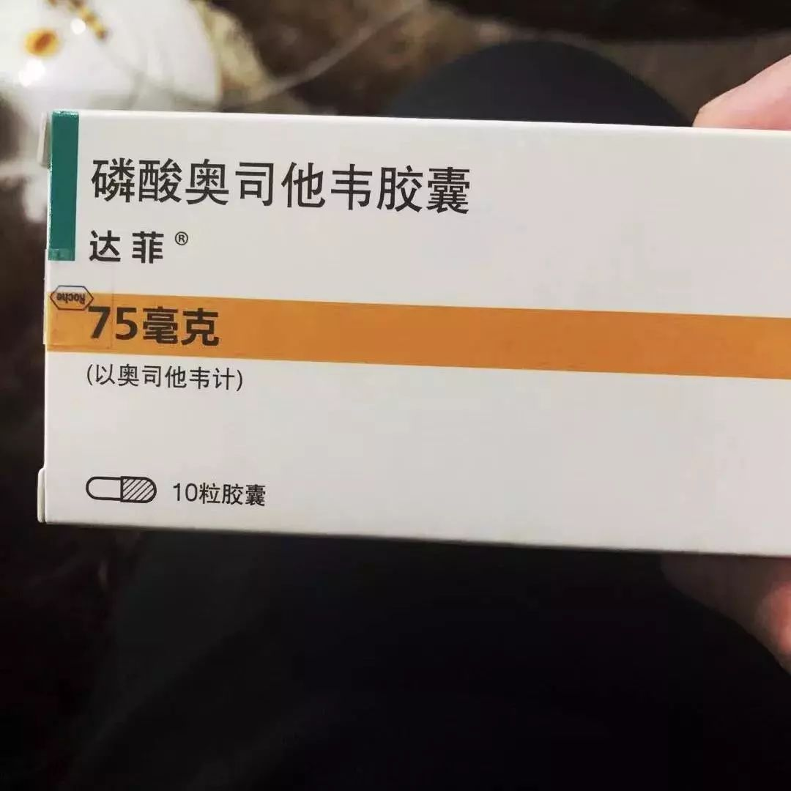
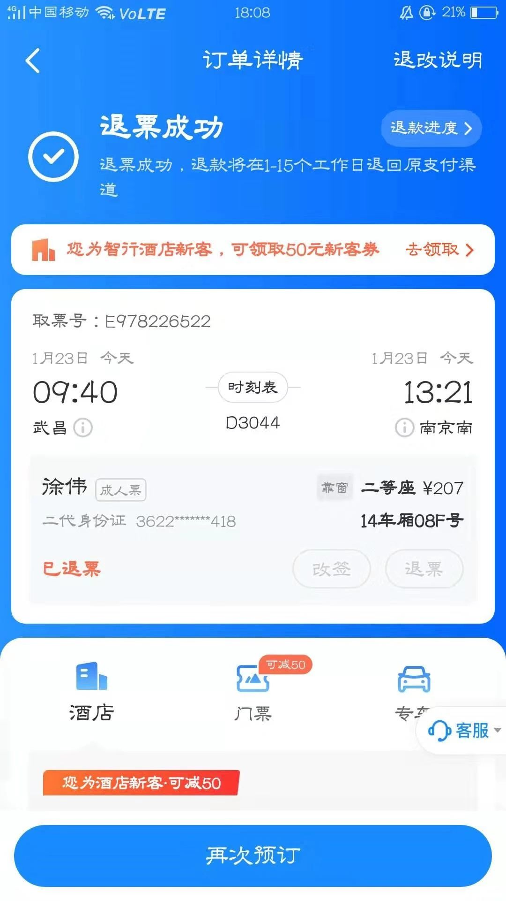

特别报道：“封城”前的武汉72小时
原文链接 备份链接 历史上，很多置人于死地的病毒并不是被人类消灭了，而是人类和它们分开居住了。 记者 | 吴洋洋 许冰清 刘娉婷 郑晶敏 郭苏妍 邓舒夏 数据资料整理 | 王一越 图表制作 | 程 星 确诊人数出现激增72小时之后，武汉 …
开启更有意思的武汉！请点击上方优良better →点击右上角“…” → “设为星标 ”


22号下午三点半，记者王菁从武汉站坐上回家的动车，随身携带一个粉色双肩包，和一个二十四寸的棕色行李箱，里面放着iPad，笔记本电脑，换洗衣物，以及准备带回家的年货。她花两个小时零九分钟坐到河南，然后换大巴回家。这条路线她走了六年，每年往返数次，没有发生过意外。
这是她原本的计划，但在20号突然加剧的武汉新型肺炎的疫情，让她的行程偏移到另一个轨迹，她选择留在武汉。

官方通报的肺炎首例患者，出现在去年12月8日。二十二天后，一份署名为武汉卫健委的《关于做好不明原因肺炎救治工作的紧急通知》开始在网上流传，引起了市民抢购板蓝根和口罩的恐慌。但第二日发布的通报中，“未发现明显人传人现象”的说法，仅为二十七例的确诊数，以及位于江夏区的中国最高级别病毒实验室p4实验室，让危机看上去似乎不是那么严重，恐慌渐渐平息。
王菁因为工作性质的原因，比普通人接收信息的渠道更多，对于本次新型肺炎，她了解到的情况，比正式通报中严峻。
出于一些理由，她不能透露自己的信息源，但在1月11日中国国家当局与世卫组织公布病毒基因序列，13日前后陆续有企业研发出病毒试剂盒之前，据她得到的信息，病毒已经“疑似扩散”了。距离华南海鲜市场五公里，“家住金银潭的一位居民表示，最近救护车来得有点多”。而附近的一些医院，已经出现较多的病患。
但她无法肯定他们是新型肺炎的患者。这种被WHO命名为2019-nCoV的新型冠状病毒，根据目前披露的信息，在通常情况下有着比SARS更长的潜伏期，为5-12天。它的部分患者“起病症状轻微，可无发热等临床症状”，因此传播也更隐蔽。
不幸的是，在没有确认病毒可以人传人的头二十天里，据王菁在采访路上的观察，武汉市民只有很少一部分戴了口罩，且多为年轻人。而一些中老年人，甚至对病毒的情况一无所知。
王菁在12月31日病毒刚通报的时候，备了十五只防霾口罩，在病毒开始爆发时，发现它不能有效隔离，于是在淘宝上花七十三块，又买了二百个可孚外科医疗口罩。随着微信群里的消息越来越严重，她打算再加购一批时，淘宝上已经买不到任何医用外科和n95口罩了。她的朋友圈里出现代购口罩的人，口罩的价格也开始节节攀升。

武汉线下的药店，同样被抢购一空。她家附近的，口罩都售罄了，去的时候正好卖完最后一包。接着在汉口采访时，药店正好进货，她赶紧以二十元一包的价格拿了五包。而她前面的一位大妈，“一口气抓了一大把，十几二十包吧。然后想买酒精棉球，什么七十五度酒精，也没有。”第二天她又去了五个药店，才终于买到。
但购入药品并没有让她心安，记者和医护人员一样，离病毒不远。在工作群里，她看到同事们交流身体近况，“有三分之一出现头重、咳嗽、肌肉酸和低烧”。他们中多数，都会去武汉的各个医院、华南海鲜市场等地，进行实地采访。单位给他们发放了3m口罩和增强免疫力的药物。
20号，钟南山院士肯定新型肺炎病毒存在人传人现象当天，微博上掀起了一波对武汉的声讨。王菁“真的很有点害怕了”，她的母亲发了好几条长语音，让她考虑自身的安全，今年委屈一下，留在武汉过年。她打视频电话哭了一场，和母亲求情，才换来回家过年的同意。
然而不到一天后，全国各省像开花一样确诊了上百例新型肺炎，各大航空公司开始对武汉的航班全额退款，她的母亲再一次劝她留在武汉。她又哭了一场，这次同意了退票，来回的手续费扣了近五十块。接着在晚上七点，12306对武汉来往的火车，开始免除退票手续费。
这会是她第一次在武汉过年，也是第一次独自过年。她取消了猫咪的寄养，准备囤一点食物。她用京东到家买了几大袋泡面，一些蔬菜，五公斤大米和几块蛋糕。第一次下单时，外卖小哥给她电话，说最近订单太多，货物不足，让她第二天早上赶紧买。最近使用外卖购买药品的人也很多，药店即便在晚上也排着队。
王菁说了很多次“怕”，她的手有一会儿怕得发抖，她想呆在家里，过年期间不出门了。但工作群里，她的同事们听到可以去同济医院采访，知道有防护服穿后，自愿报名。这让她为自己的胆小感到愧疚。
其实也没什么愧疚的，每个记者都有自己的工作任务。22号下午，在王菁本该坐上回家的动车的时候，武大中南医院传出用ECMO（移动心肺仪）技术，成功救治一新型冠状病毒肺炎重症患者的消息。
她在家中，有些流鼻涕，先用威猛先生、再用酒精，做了一个多小时厨房的卫生。第二天她将去医院采访。

截止22号晚上，兰州已发现一例新型冠状病毒的疑似病例。
20号早上起床打开手机，李女士看到铺天盖地的疫情新闻，立马下楼在就近药店买了几包医用外科口罩。大概晚上八点，在各大媒体以及社交平台实时观察疫情后，李女士决定取消21号回武汉过年的机票，她说自己向来都是敏感度很高的人。
武昌张之洞路家中的父母，在接到女儿过年不回家的消息后，还是难掩失望，但在她努力向父母介绍病情现状之后，最终还是表示理解和支持，“特殊情况这也是没有办法的事，只能等疫情过去再回家。”
虽然身在外地，李女士不停刷新着朋友圈，关心家乡亲人朋友们的动态，她说每看到一篇对病毒详细分析的报道，都会认真阅读，有选择性地转发给家人，然后再视频和父母叮嘱戴口罩的问题，老人嫌憋地难受，出门总是忘了戴，这种漫不经心的不以为意让李女士感到十分头疼。
李女士不能去到父母身边，隔这么远，更多是作为子女对老人的担心，嘱咐又嘱咐。
兰州街道上，佩戴口罩的行人越来越多，大家都开始意识到问题的严重性，李女士和自己的家人会尽量减少外出，但必要的饭局还是在照常进行。
昨天下午，李女士还在武汉同学群里收到几个打麻将的视频，她说武汉人心态真是好，但自己对这种疫情非常敏感，“如果我在家，我可能就会去囤蔬菜水果粮食了，然后关在家里，一步也不出去，我可能是非典型性武汉人。”

大概1月20日之前，在网络上，微信里，她看到了很多无所谓的声音，李女士无法理解这些人的态度。从这两天开始，感染人数不断上升之后，李女士就再没看到这样的声音了。
疫情变严重后，出入武汉几乎成为电影《釜山行》中的场景，网络上也流传着很多对话截图，其中不乏一些虚假消息。今天封城的消息一出，每个人更加积极地转发着各种新闻报道，并加以评论，李女士也是其中一员。
“我还是比较淡定的，哪怕心里其实很着急，恐慌倒没有，但是也不能太无所谓，不能觉得这个事情离自己很远就不做好防护，特别现在人口流动性这么大。”
李女士现在每天最担心的就是在武汉的家人，弟弟也因此留在上海独自过春节，今年家里就剩两老过年。
李女士回忆起多年前的那场非典病毒，“当年非典我记得很清楚的，我当时在学校里，封校一个多月没有回家，就是每天看新闻，基本与外界隔绝。火车站机场人员密集，又是封闭空间，最容易引起传染，所以这次我才决定不回家的。”
身为化妆师，李女士的工作暂时还未受到影响，倒是一些做餐饮的同学朋友在微信群里聊天时，都表示生意惨淡。
因为疫情，李女士把在酒店定的年饭也退了。以往春节，李女士家会亲戚之间挨家轮着吃年饭，今年大家也只能在群里视频吃年饭。

早上7:15，王雯被公寓外的电车声吵醒，她习惯性打开手机翻看微博。
王雯是武汉人，在大阪从事旅游服务工作五年了。从国内#武汉肺炎#形势变得紧张开始，她每天都要拿起手机无数次，刷微博，刷朋友圈，不漏掉任何一个跟“新型肺炎”相关的新闻。

当看到#武汉机场火车站离汉通道暂时关闭##武汉公交地铁暂停运行#两个热搜时，王雯立刻清醒，她猛地从床上坐起，给在武汉的父母打去电话。
北京时间6:20，父母还在睡梦中，接到王雯的电话时他们有些惊讶，以为是女儿提前回国。当听明白原由后，彼此连问好的时间都没有，挂掉电话，他们准备去楼底下的菜市场再买些东西。
虽然家里已经腌好腊鱼腊肉和香肠，炸好肉圆子和藕夹当年货，冰箱里也有饺子和火锅料。他们觉得这些还不够，一定要再多囤些蔬果青菜和干粮才放心。
疫情让身在异国的王雯放弃回家过年，这不是她第一次不回家过年。她喜欢春节的热闹，无奈招架不住父母的唠叨和七大姑八大婆的问候，总会借工作之名躲避春节。
今年，王雯的家族群里、朋友群里没有聚餐，也没有拜年。她知道，大家都没心情过节。


春节期间，从中国到日本的游客数量只增不减，王雯的工作还要继续。放下电话后起床准备早餐，肺炎的消息看多了，王雯觉得自己的嗓子也开始有些不舒服。
看着电视机里新闻轮番播放武汉肺炎的疫情，想着网络上爆炸式的信息，王雯突然大哭起来，她有些想家了。
20日上午11：25，周翔发布了一条朋友圈，呼吁的士司机为了安全佩戴口罩。没过多久，武汉市政府出台红头文件，正式执行在公共场所强制要求佩戴口罩的相关措施。

自从2019年12月31日，武汉市新型冠状病毒肺炎疫情进入公众视野后，网络平台上涌现对武汉人防护意识不足的调侃，攻击。对于身处其中的周翔而言，武汉人的重视程度已经有了明显提升，“宣布后很多市民重视了”。
周翔是湖北宜昌人，目前在武汉从事设计工作，工作地点距离华南海鲜市场只有近六公里，为了安全，在他提议下公司提前放了年假。至于何时恢复工作，一切仍是未知，好在网络时代，许多工作可以远程线上完成。
“生命高于一切，项目大不了推迟或者不做”。
疫情严重，周翔并不打算回老家。留在武汉的他买了六盒普通医用口罩，以及两盒朋友推荐购买的磷酸奥司他韦——一种作用于神经氨酸酶的特异性抑制剂，其抑制神经氨酸酶的作用，曾主要运用于治疗甲型流感和乙型流感。

除了这些特殊的“年货”，年夜饭也需要好好准备。家附近的市场依旧热闹，和往年最大的区别在于人们都戴着口罩，手上提满了东西。周翔猜测，大家应该都做好了不出门的准备。
过年七天，按照进入“隔离状态”的计划，周翔和妻子、丈母娘一家的生活所需要么提前购置妥当，要么依靠外卖进行必要的补给，“反正尽量不出门”。
在他的朋友圈里，有人转发起了中药药方，有人担心疫情恶化，也有人发了江汉路地铁站空空荡荡的视频。焦虑和恐惧，成为了最显见的情绪。
周翔也不乐观，担心新型冠状病毒肺炎的疫情发展，会和2003年的非典型肺炎的发展时间表一样漫长。但他还是对政府充满信心，“政府什么时候做什么有很大意义，这是我们制度的优势”。
就在采访结束后不久，人民日报发布了最新消息，湖北省多地发现疑似病例，周翔的老家宜昌也在其中。
按原本的计划，徐伟会坐上1月23日早上9:40的火车，从武昌站踏上回家的路，但现在他只能在租的房子里，一个人度过2020年的春节。

一开始，对于这场突如其来的疫情徐伟并不在意。他每天的活动范围仅限于住所和一公里外的公司之间，由于距离汉口较远，新型冠状病毒肺炎的消息似乎并没有对生活造成太大影响。
身边很多朋友转发关于“不明原因肺炎”的文章，也有不少人提前离汉，这些没能引起他的重视，“我侥幸心里比较重。”
直到21日，远在家乡的姐姐突然询问能不能提前请假回家，许多朋友发来注意防护的提醒，看着朋友圈里相关的消息骤然增加，徐伟才意识到情况不对，“路上好多（人）都戴着口罩”。
当天下午，由于员工集体申请，公司宣布春节前以在家办公形式工作。身边的同事大多数依然选择回家，徐伟和姐姐商量过后，考虑到频繁出入火车站可能增加不必要的风险，并且担心传染家人，他决定留在武汉。
对于儿子的决定，徐伟的母亲有些难以接受，甚至以儿子不回家她就来武汉为要挟。在徐伟反复解释下，母亲终于还是理解了这个决定。
“还是比较希望我回去吧，主要是希望我回去了短时间不要再回来。”
不知道是因为年关将至，还是因为这场肺炎，住处附近似乎突然安静了下来，就连汽车的声音都少了很多。徐伟一边说着自己喜欢安静，一边又忍不住感慨自己过得有些悲凉。

回家的行程取消了，出门逛逛也不现实，公司到现在也没有发出年后的工作安排，面对突然清闲下来的生活，徐伟一时间有些无措。他的假期计划看起来有些单调：打游戏，学中医理论，做饭。
电脑里的《刺客信条》已经玩腻了，徐伟在朋友圈发了消息，问有没有好的游戏推荐，下面有十几条评论都在提《瘟疫公司》，“说是沉浸式游戏体验”。几年前徐伟曾经玩过这款游戏，听说有人基于这款游戏做了一个“神预言”mod，他有些好奇，打算研究一番。
对于武汉的疫情，徐伟显得非常乐观：那么大的事，全社会自然会认真对待，我们能做的就是保护好自己，并希望这段日子尽快过去。

“我妈说，如果我是晚一天的票，就不让我回来了。”已经回到武汉的may，每一天都比前一天更后悔回武汉。
早在12月底的时候，may从一条微博里得知“武汉有了不明原因肺炎”。但那条微博的重点，是在介绍“武汉拥有全国唯一一个p4级病毒实验室”，牛逼的家乡让may放宽了心，抢了回家的火车票。

真正察觉武汉的肺炎没有想象中的简单，是在20号。广州的药店买不到口罩了，肺炎确诊病例不断增加的新闻铺天盖地，钟南山带队专家组到了武汉，新闻发布会上宣布“肺炎人传人”……may回家的心动摇了，于是发消息给在武汉从医的父母，了解武汉的情况。
“没事，我们连口罩都没带。”父母的一句话，让may宽了心。21号早上10:40，may在广州南踏上了回武汉的列车。”
列车上80%的乘客都戴着口罩，火车站里50%的人戴着口罩，舅妈在接may回家的途中也只字未提武汉的肺炎。may一度觉得，是自己过虑了。但还是改签了回广州的车票，从初四提前到初二。
“may，加入了生化危机的游戏吗？”在回家的火车上，may还轻松的和朋友在微信上调侃自己是“逆行的勇士”，并迫不及待地约上了22号的室外下午茶。但随后，这条约定被不断抛入群中的肺炎消息所淹没，大家也自动解约了春节期间的唯一一场约定。
每天宅在家里哪也不去的may，每一天都比前一天后悔自己回来的决定。
在月初等待回家的20天里，广州的同事都在劝她“别回去，太危险了”。当时的无所畏惧，已经变成了现在的后悔莫及。
“同事虽然是开玩笑，但多少透露出害怕和嫌弃。让我们回广州以后隔离14天再回公司上班。且不说会不会真的感染上，年后的工作肯定会受到影响。”
初二回广州的票会退吗？may不知道。
离21号放假还有半个月，bittersvveeter就定下了去大年初一去西安的火车票，初四从西安去重庆的机票，并在计划从重庆去上海的旅行。这个春节，她原本准备浪过去。
22号，宅了3天的她，退了去西安的火车票，和去重庆的机票，并劝阻还没回武汉的上海朋友，“别回来了！”

在家里的这三天，bittersvveeter睁开眼的瞬间，就会开始盘旋三句话：
“这将是你往后余生里最年轻的一天”
“我希望这是你往后余生里最糟的一天”
“如果这是你的最后一天你会怎么过”
然后打开手机，查看新增的病例，再看肺炎有无好转的迹象。然后起床，拿起手机去洗脸池前，洗手、用蘸了肥皂水的纸巾擦手机。早餐时间，她和爸爸端着碗坐在沙发上，无声的吃着早饭，守着新闻频道，看着屏幕下的滚动条。
“每一天都像在等待审判，但又不知道自己犯了什么错误要受罚。”
因为家里的大人不戴口罩，她气哭过两次。“爸爸说，没事的，只要不去人多的地方。姑姑说，买不到口罩，戴不了。”于是她跑遍了青山所有的药店，结果只买到了一小包。“还是说好话让买了两大袋的银行职员卖给我的。”
没有对这次的肺炎严重程度进行过预判，只感觉知道时已经“非常可怕”。bittersvveeter第一次开始害怕起死亡，“担心自己，担心家人。对一切都充满戒备。尽管心里在重复，生命里最年轻的一天不能这么过，但想得最多的还是自己和亲友会不会有事。”
22号的早上，坚持不戴口罩的爸爸，主动戴起口罩，并在开车去奶奶家的途中，让bittersvveeter记下他所有的银行卡密码。“我觉得我最近记性越来不好了”，尽管bittersvveeter调侃老爸，“你忘了我，都不会忘了你的银行卡密码吧”。但她心里知道，老爸开始害怕了。

疫情大面积爆发时，罗馨正在距离武汉900多公里外的澳门。虽然身处异地，仍然能感受到越来越重的恐慌感。
因为是很早就定下的行程，加之当时疫情还没有发酵，出发去澳门前，罗馨和朋友都没有对这次病毒感到害怕。
出发的时候，武汉是表面上的和平。出入天河机场程序如常，没有量体温，也没有工作人员监察状况，肉眼判断机场内戴口罩人数比例不足百分之十。
罗馨开始感到恐慌是在飞机降落后，空乘人员并没有像平时一样让所有乘客依次下机，等候时，只见四五个穿着防护服、护目镜、口罩全副武装的工作人员走上来，让每位乘客填写健康状况说明书，逐一检查体温，并提示全程不许拍照录像。
身后的乘客还在用武汉话笑着开玩笑：“搞得像是我们从生化危机丧尸区来的一样。”

罗馨抵达澳门的第二天，旅行的兴奋感还来不及上浮，就被微博、微信和各类新闻的消息淹没。越来越多的感染人群、增加的死亡人数、众说纷纭的现状，一夜之间所有群，无论地区，都在讨论着这次肺炎。
虽然依然按照计划在澳门游玩，但心里没有一刻不在挂念这件事情。
同行的人中有外地的旅伴因为家乡出现了首例感染而担忧不已，罗馨和朋友看着武汉每天都在不断增加的感染人数只能沉默。只要一有新的情况进展，就会马上在家庭群中告知父母长辈，时刻让他们注意。

回程那天，罗馨和朋友在跑遍了“威尼斯人”（度假村）附近几乎所有的万宁、屈臣氏和药店，每家店的医用外科口罩全部断货，直到临上飞机前不到两小时，才在一家药店找到最后十几只口罩。
澳门机场内的地勤、海关已经全部佩戴上口罩；候机厅里一位乘客咳嗽几声，立马引来身边人频频侧目；落地天河机场，戴口罩的人数也明显增多。这场起源于武汉的肺炎，正在大范围引起关注，得到防控。
回武汉的第二天，闺蜜取消了春节的聚会计划并发来问候：“欢迎回到疫区”。放大她的头像，已经“戴”上了n95口罩。
从疫区外回到疫区内，罗馨的真实感受是情况没那么乐观，也没那么糟糕。这个春节对于武汉人来说注定不平凡。
2020年1月23号，武汉的天依旧阴着，
雾霾和这个城市的心情一样。
明天就是除夕了，
但今年没有春节，只有一场战斗。
愿每个人都安好，better将一直陪着大家。
text | better编辑部
photo | 受访者提供
新朋友长按下方二维码
添加”better桑”
老朋友可直接勾搭better君、better酱

加better桑为好友
💬
# 你在哪里？你还好吗？#
点击文末右下角留言
-
END
原文链接 备份链接 历史上，很多置人于死地的病毒并不是被人类消灭了，而是人类和它们分开居住了。 记者 | 吴洋洋 许冰清 刘娉婷 郑晶敏 郭苏妍 邓舒夏 数据资料整理 | 王一越 图表制作 | 程 星 确诊人数出现激增72小时之后，武汉 …
原文链接 备份链接 其他科室要尽量把医用口罩和防护服留给隔离病房的医护人员使用 2020年1月22日，在湖北省政府首场新型冠状病毒感染肺炎疫情防控工作新闻发布会上公布，新型冠状病毒感染的肺炎已致湖北17人死亡。图/新华 文 |《财经》 …
原文链接 备份链接 文 | 王彦入 王丹妮 程静之 殷盛琳 李晓芳 周航 叶雯 曾宪雯 编辑 | 王珊 陶若谷 33岁的刘科戴上两层口罩独自走进地铁，夹杂在路人中间。像他这样拉着行李箱的人并不少见，彼此间默契地保持着距离。三天前，他刚刚从 …
原文链接 备份链接 【财新网】（记者 覃建行）新型冠状病毒肺炎确诊病例激增后，武汉百步亭社区曾于此间举办“万家宴”的活动引发了争议。1月22日，财新记者走访当地，多位居民称此前政府对疫情评估不够，导致在传染性疫情趋重的情况下还举办如此大 …
原文链接 备份链接 【财新网】（记者 黄蕙昭）一则半夜发布的“封城”通告惊动全国，也拉开武汉肺炎防疫之战新势态。1月23日凌晨两点，武汉市新型冠状病毒感染的肺炎疫情防控指挥部通报宣布，今日10时起，武汉公交、地铁、轮渡、长途客运暂停运 …